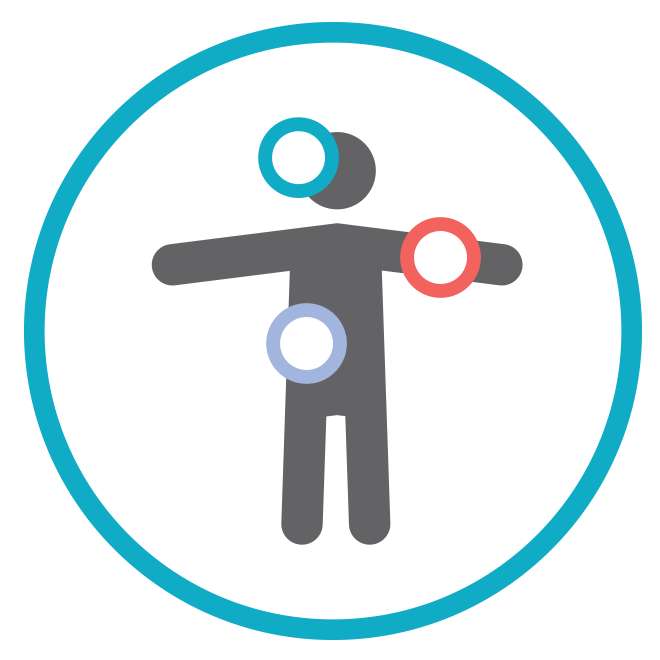

<ion-content>
  <div class="backgroud ion-text-center">
    <div class="title ion-text-center">Ciclo menstrual</div>
    <ion-list>
      <br>
      <div class="sintomas">

        <ion-list-header>
          <div>
            <div>
              
            </div>
            <div class="text">
              <ion-label><b>Sintomas</b></ion-label>
            </div>
          </div>
        </ion-list-header>

        <ion-radio-group > 

          <div>
            <div class="coluna1">
              <ion-item>
                <ion-label>Tudo está bem</ion-label>
                <ion-checkbox color=" secondary" value="tudo-esta-bem"></ion-checkbox>
              </ion-item>

              <ion-item value="acne">
                <ion-label value="acne">Acne</ion-label>
                <ion-checkbox color="secondary" value="acne"></ion-checkbox>
              </ion-item>

              <ion-item>
                <ion-label>Dor nas costas</ion-label>
                <ion-checkbox color="secondary" value="dor-nas-costas"></ion-checkbox>
              </ion-item>

              <ion-item>
                <ion-label>Dor muscular</ion-label>
                <ion-checkbox color="secondary" value="dor-muscular"></ion-checkbox>
              </ion-item>

              <ion-item>
                <ion-label>Cãibra</ion-label>
                <ion-checkbox color="secondary" value="caibra"></ion-checkbox>
              </ion-item>

              <ion-item>
                <ion-label>Fadiga</ion-label>
                <ion-checkbox color="secondary" value="fadiga"></ion-checkbox>
              </ion-item>

              <ion-item>
                <ion-label>Insônia</ion-label>
                <ion-checkbox color="secondary" value="insonia"></ion-checkbox>
              </ion-item>
            </div>

            <div class="coluna2">
              <ion-item>
                <ion-label>Seios sensíveis</ion-label>
                <ion-checkbox color="secondary" value="seios-sensiveis"></ion-checkbox>
              </ion-item>

              <ion-item>
                <ion-label>Inchaço</ion-label>
                <ion-checkbox color="secondary" value="inchaço"></ion-checkbox>
              </ion-item>

              <ion-item>
                <ion-label>Náusea</ion-label>
                <ion-checkbox color="secondary" value="nausea"></ion-checkbox>
              </ion-item>

              <ion-item>
                <ion-label>Cólica intestinal</ion-label>
                <ion-checkbox color="secondary" value="colica-intestinal"></ion-checkbox>
              </ion-item>

              <ion-item>
                <ion-label>Prisão de ventre</ion-label>
                <ion-checkbox color="secondary" value="prisao-de-ventre"></ion-checkbox>
              </ion-item>

              <ion-item>
                <ion-label>Diarréia</ion-label>
                <ion-checkbox color="secondary" value="diarreia"></ion-checkbox>
              </ion-item>

              <ion-item>
                <ion-label>Calafrios</ion-label>
                <ion-checkbox color="secondary" value="calafrio"></ion-checkbox>
              </ion-item>
            </div>

            <div class="ultimo-text">
              <ion-item>
                <ion-label>Aumento de apetite</ion-label>
                <ion-checkbox color="secondary" value="aumento-de-apetite"></ion-checkbox>
              </ion-item>
            </div>
          </div>

        </ion-radio-group>
      </div>

      <br>
    </ion-list>

    <div class="rodape ion-text-center">
      <ion-button color="primary" (click)="back()" style="font-family: Verdana, Geneva, Tahoma, sans-serif">
        <b>voltar</b>
      </ion-button>
      <ion-button color="primary" (click)="menu()" style="font-family: Verdana, Geneva, Tahoma, sans-serif">
        <b>menu</b>
      </ion-button>
      <ion-button color="primary" (click)="next()" style="font-family: Verdana, Geneva, Tahoma, sans-serif">
        <b>próximo</b>
      </ion-button>
    </div>

  </div>
</ion-content>